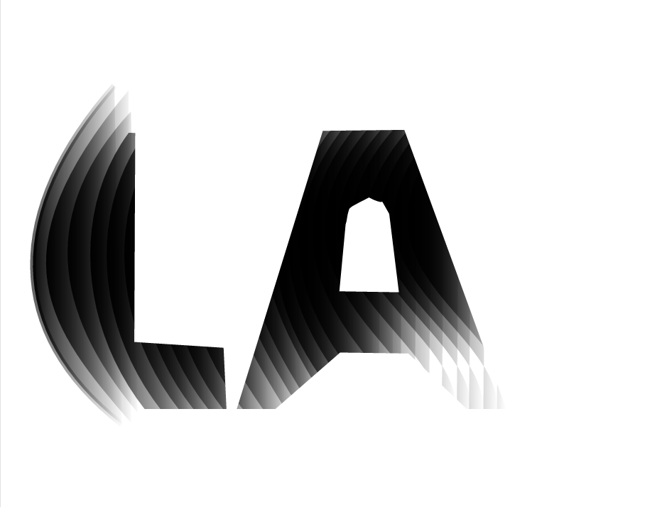
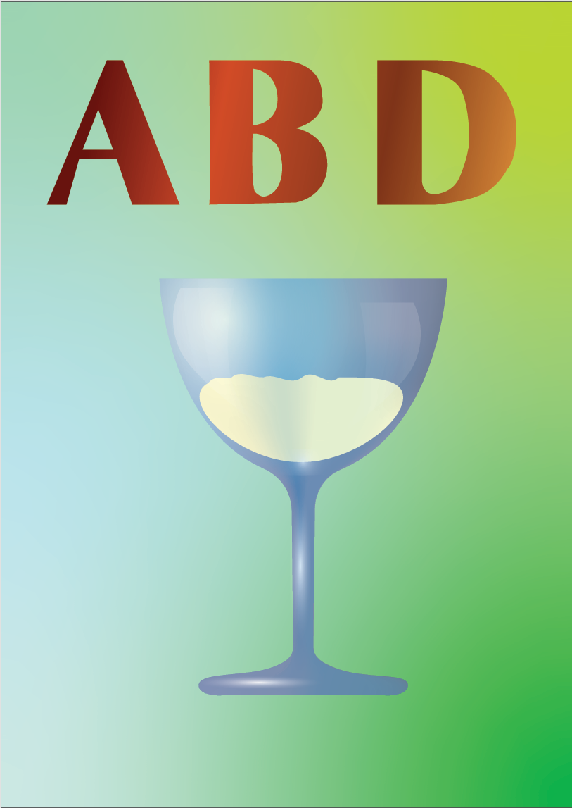
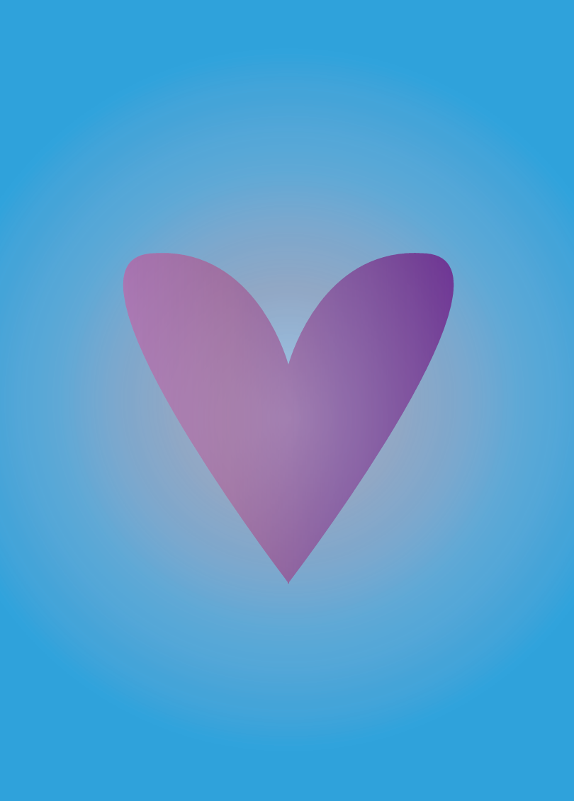
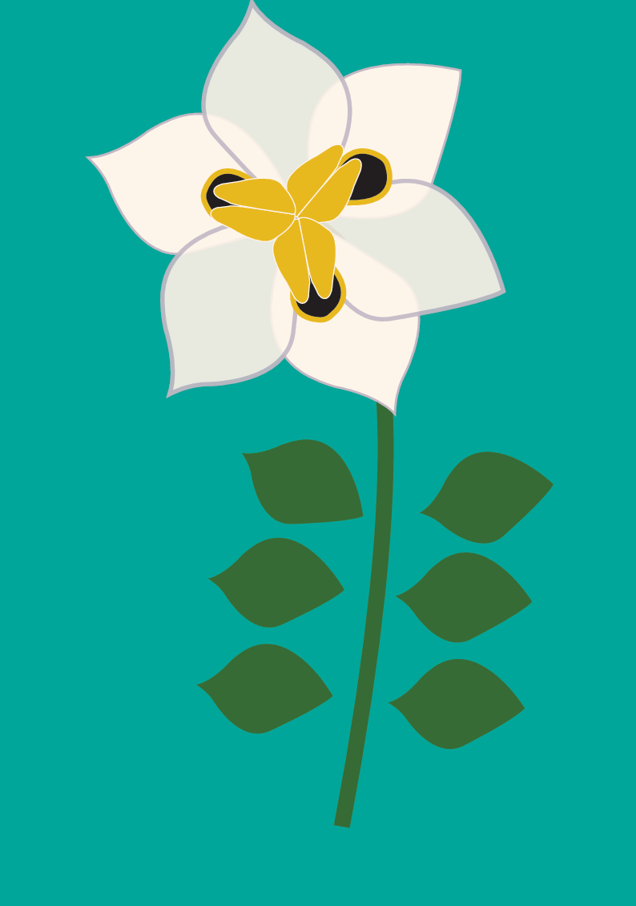
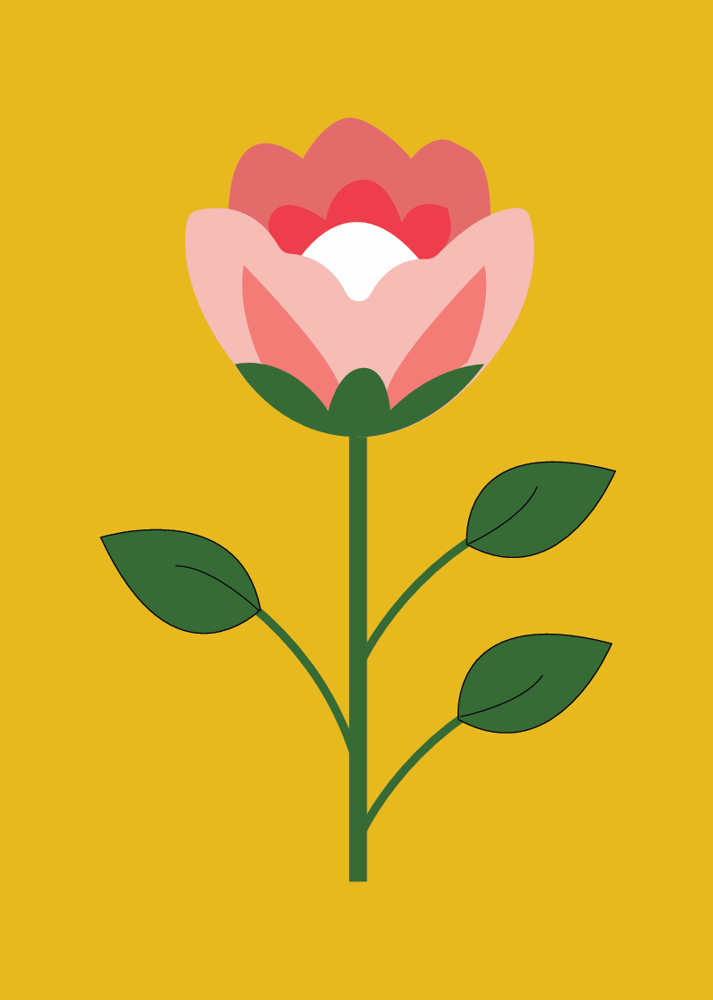
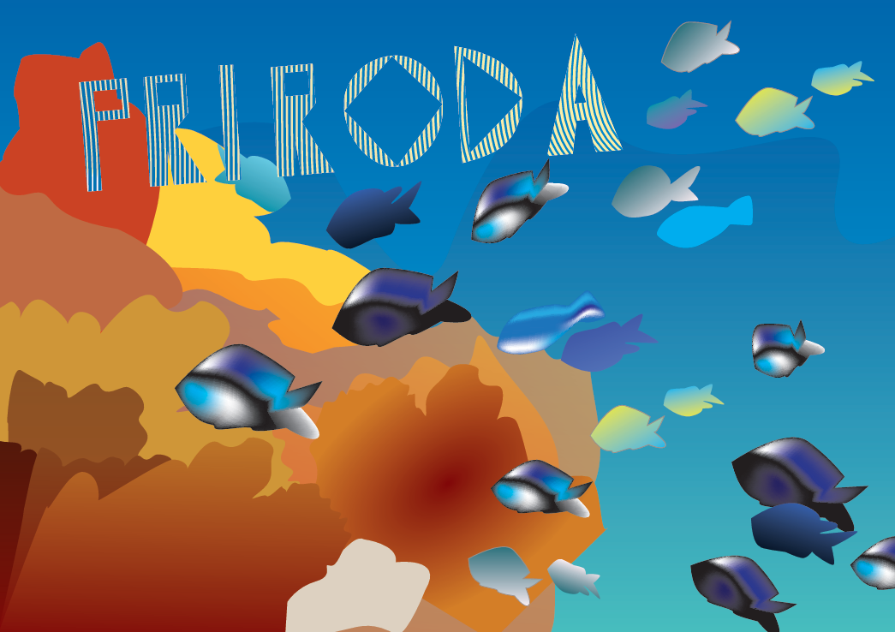
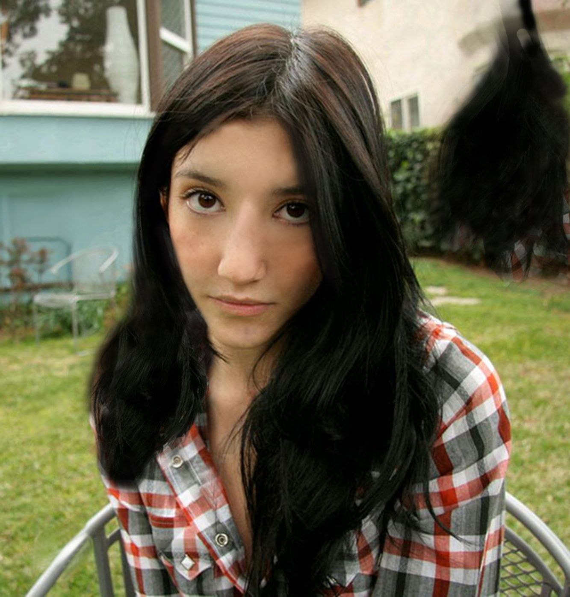
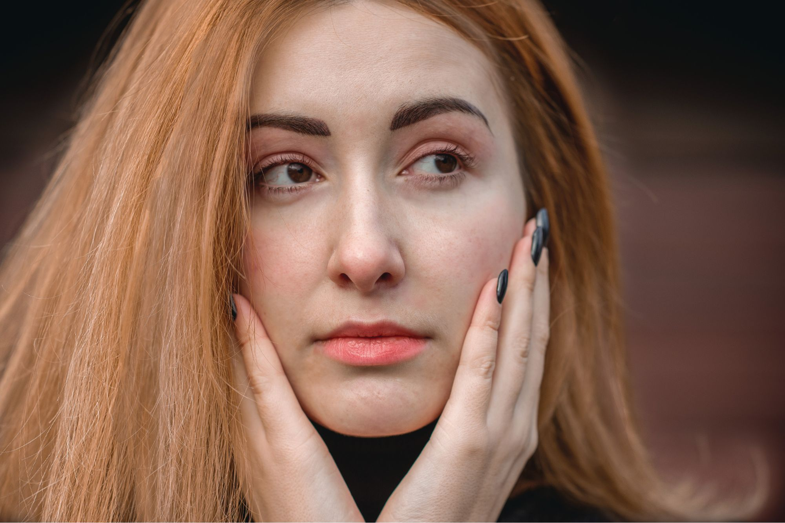
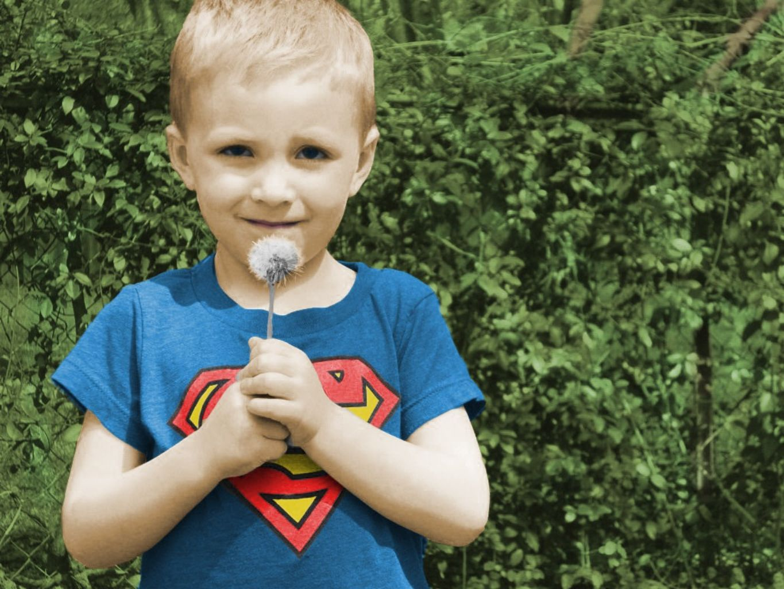

Ovaj tekst je napisan fontom koji sam izradila na 1. vježbi!
2. vježba - Bezierova krivulja, precizno crtanje

3. vježba - boja, transformacije


4. vježba - gradijenti, transparencija


1. kolokvij

Na vježbama sam radila na savladavanju osnovnih i naprednijih alata Adobe Illustratora.
Učila sam rad s vektorskom grafikom, kreirala jednostavne oblike pomoću alata Pen, Shape Builder i Pathfinder.
Vježbala sam bojanje objekata, primjenu gradijenata i kreiranje slojevitih kompozicija.
Također sam radila na izradi logotipa, ilustracija i tipografskih kompozicija, s fokusom na preciznost, kompoziciju i kreativni izraz.
Photoshop
5. vježba - retuširanje


6. vježba - koloriranje

7. vježba - fotomontaža
2. kolokvij
Na vježbama sam radila na obradi i manipulaciji fotografija koristeći osnovne i napredne alate Adobe Photoshopa.
Učila sam retuširanje pomoću alata Clone Stamp, Healing Brush i Spot Healing, kao i selektiranje dijelova slike korištenjem Lasso, Quick Selection i Pen alata.
Radila sam s layerima, maskama i adjustment layerima kako bih poboljšala boje, kontrast i svjetlinu.
Također sam izrađivala foto-montaže, postere i kreativne kompozicije kombiniranjem više slika i teksta.
Premiere
Vježba 8 - cinemagraf
9. vježba - video obrada
10. i 11. vježba - web stranica u HTML-u i postavljanje na github
Na vježbama sam radila na osnovama video montaže u Adobe Premiere Pro.
Učila sam uvoz i organizaciju video materijala, rezanje i spajanje isječaka, rad s timeline-om i sequence-ima.
Također sam učila kako izvesti gotov video u različitim formatima i rezolucijama.
.jpg)
.jpg)
.jpg)
.gif)